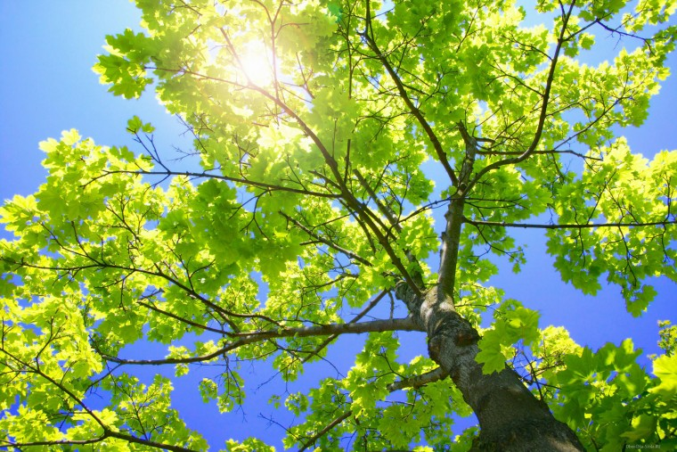

Де́рево — велика, багаторічна, дерев'яниста рослина.
Хоча не існує встановленого визначення щодо максимального розміру, термін «дерево» загалом застосовується до рослин заввишки як мінімум від 3 м[1] до 6 м[2] в зрілості і які, що важливо, мають вторинні гілки, котрі ростуть на єдиному головному стеблі або стовбурі, з ясно вираженим домінуванням стовбура над вторинними гілками (див. кущ для порівняння). В порівнянні з більшістю інших форм рослин тривалість життя дерев вища. Декілька видів дерев можуть досягати понад 100 м заввишки і деякі можуть жити протягом кількох тисяч років.
